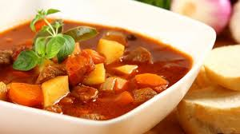

Венгерский суп "Гуляш"
Очень вкусный суп! Гуляшом также принято называть мясо в подливе. Но это — именно суп. Густой, наваристый, с богатым вкусом и ароматом. Конечно, лук можно обжарить на растительном масле, вместо говядины использовать любое мясо, но это будет другой рецепт и другой вкус. Количество ингредиентов указано на четырехлитровую кастрюлю.
Ингридиенты:

700 г филе говядины
100 г сала (свежего)
700 г картофеля
300 г помидоров
250 г болгарского перца
200 г лука
2–3 зубчика чеснока
1 ст.л. молотой паприки
1 ч.л. тмина
соль
перец
Приготовление
Сало нарезать небольшими кусочками.
Лук мелко нарезать.
Мясо нарезать небольшими кусочками.
Перец очистить от семян, нарезать соломкой.
Помидоры нарезать кубиками.
Чеснок мелко нарезать.
Картофель почистить, нарезать кубиками.
В кастрюлю (желательно с толстым дном) положить сало.
Вытопить из сала весь жир.
Шкварки вынуть и выбросить.
В кастрюлю добавить лук.
Обжарить.
Добавить паприку.
Перемешать.
Добавить тмин.
Перемешать.
Тушить 1–2 минуты.
Добавить мясо.
Потушить 5–7 минут.
Посолить, поперчить.
Налить воду так, чтобы она покрывала мясо.
Накрыть крышкой.
Тушить в течение 1.5 часов (при необходимости воду подливать).
Добавить картофель.
Залить 2–2.5 литрами воды.
Довести до кипения.
Добавить перец.
Варить 5–7 минут.
Добавить помидоры.
И чеснок.
Варить до готовности картофеля.
Если необходимо, посолить.